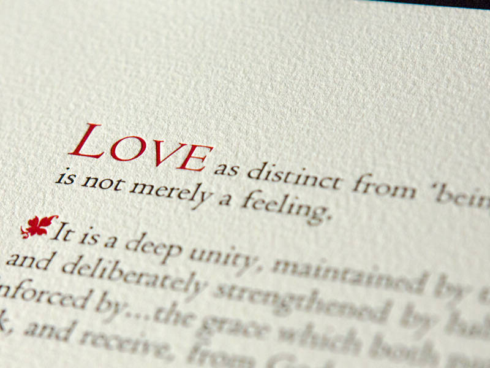
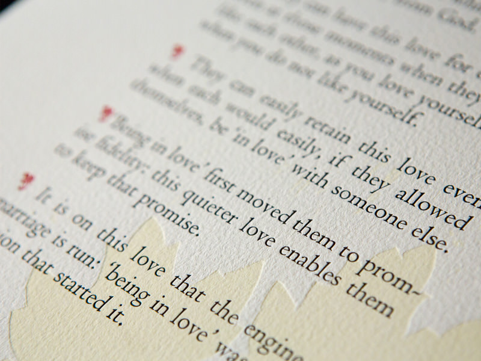
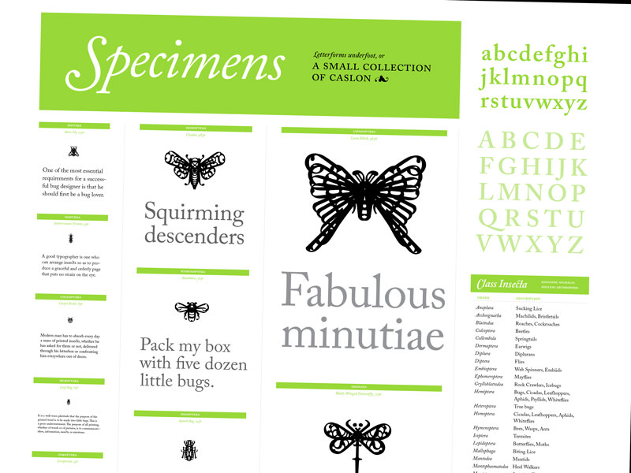
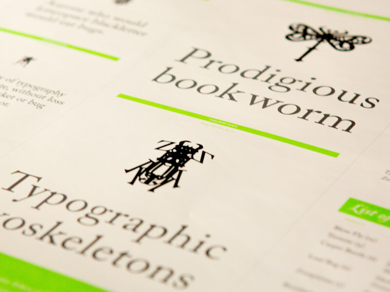
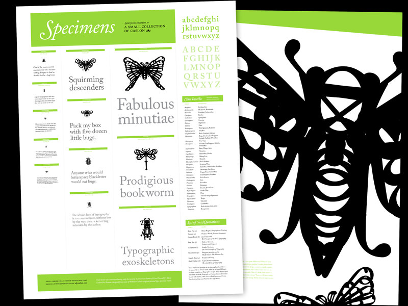
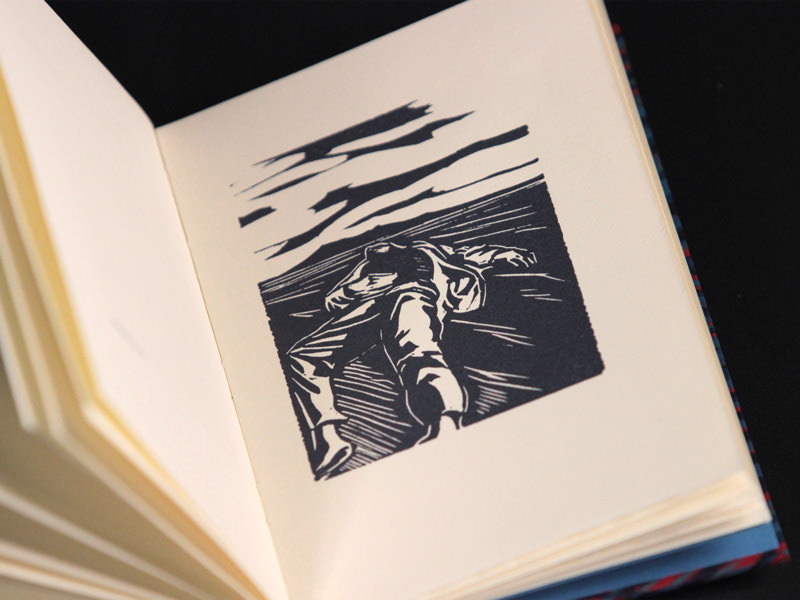
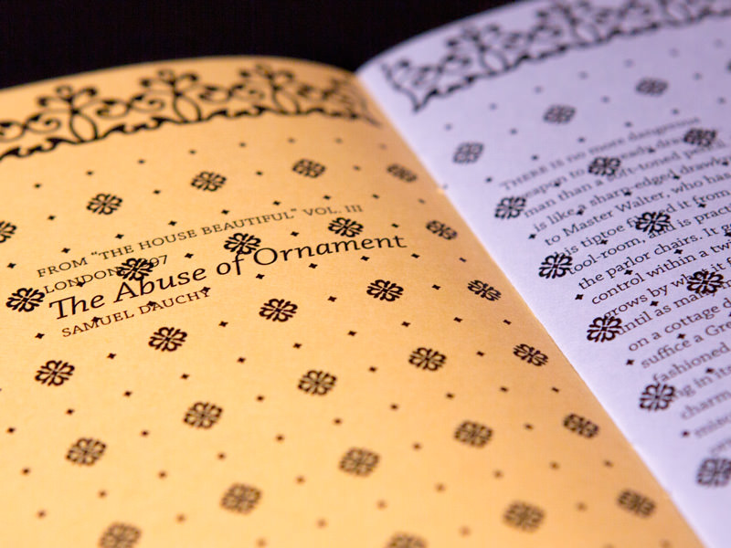
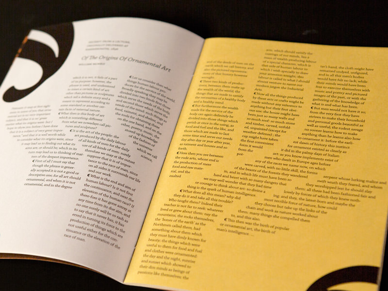

Selected print projects
My roots are in typography
Love broadside
Big, beautiful, letterpressed type with a few flourishes and a woodcut illustration


Specimens
A variation on the classic type specimen sheet



Jonah
A handmade book of linocut illustrations

Ornate
An experimental magazine

